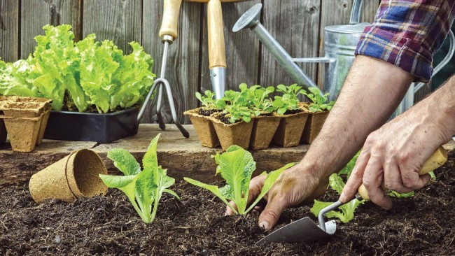

Blog de la Huerta

GuÃa para crear una huerta urbana
Consejos prácticos para iniciar tu propia huerta en casa, desde la elección de semillas hasta el cuidado diario.
Ver guÃa en EcoHortumBeneficios de consumir frutas y verduras
Descubre por qué incluir frutas y verduras frescas en tu dieta mejora la salud y previene enfermedades.
Recomendaciones de la OMSFrutas y verduras de temporada en España
Consulta el calendario de productos de temporada para consumir alimentos más frescos y sostenibles.
Calendario en Frutas-Hortalizas.comRecomendaciones para el cultivo ecológico
Técnicas y consejos para cultivar de forma ecológica y respetuosa con el medio ambiente.
Ver en Ecoticias